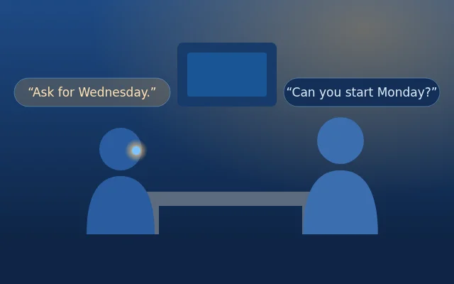
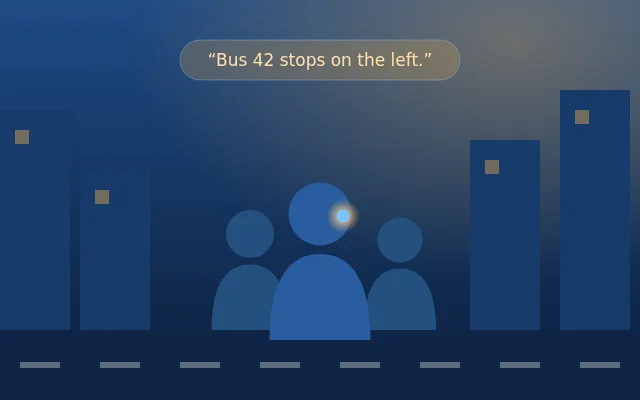
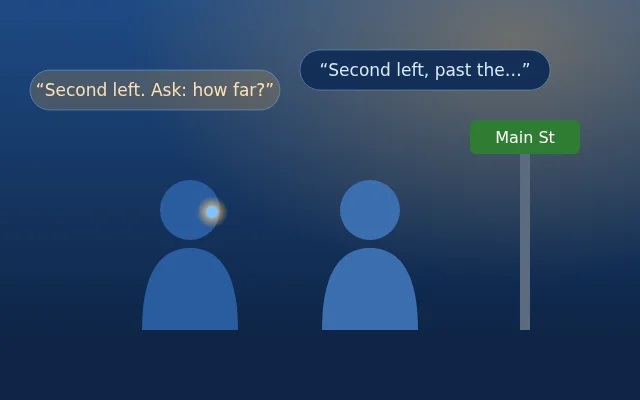
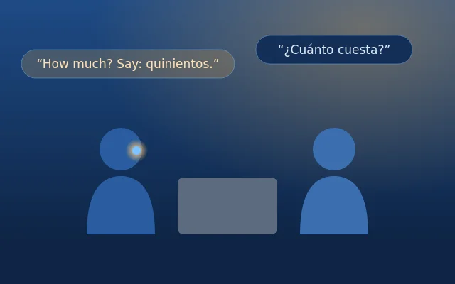

How Whisper works
Hears
Listens to the whole conversation
Thinks
Gets the topic, then decides: stay quiet or help
Whispers
A short tip in Ara’s voice – only you hear it
Moments where a friend nearby helps

Coach mode keeps you on point and whispers the better option or the next thing to say – only once it has something worth saying.

Street mode stays calm: one short tip at a time, never while someone is talking.

Ask “Whisper, …” any time for a quick answer, or let javis catch the detail you missed.

Translate mode whispers what they meant in English and a short reply you can say in their language.
Why Whisper, not just a chatbot?
| Chatbot app | Javis Whisper | |
|---|---|---|
| When it helps | When you stop, unlock, type | During the conversation, hands-free |
| Who hears it | Screen or speaker | Only you, in your earbud |
| Knows the moment | Only what you tell it | Hears both sides, tells your voice from theirs, knows the topic |
| Knows when to be quiet | Always answers | Stays quiet unless it really helps; never asks you questions |
| Remembers | Chat history | People you met, what was promised, a short recap after |
Our privacy promise
- Conversations are never recorded. Audio only goes out live to be transcribed; just the text is kept – on your phone.
- Your voice sample is kept encrypted on your phone and never uploaded.
- You bring your own xAI key; it is stored encrypted on the phone, never in the app.
- People and notes can be edited or deleted any time on the People screen. Send to PC only runs when you press it.
FAQ
What do I need?
An Android 9+ phone, Bluetooth earbuds with a microphone (Calls audio enabled), an internet connection and your own xAI API key.
Will the other person hear it?
No – the whisper plays only in your earbud. Keep the volume low and use one earbud for the most natural feel.
Does it talk all the time?
No. It listens first, catches on after the first exchange and only whispers when it has something useful. It never corrects a joke.
Can I ask it directly?
Yes – say “Whisper, …” followed by your question and it answers right away.
Is it on iPhone?
Not yet – Android only for now.
Is it finished?
It’s a prototype: it works, and it gets better with every real-world test.
What it does

Knows your voiceOne short enrollment, kept encrypted on your phone.
Remembers people
Who you talk to and what was promised.
Who you talk to and what was promised.

Language bridgeHelps you understand and answer in another language.
Street mode
Calm, one tip at a time, never while someone is talking.
Calm, one tip at a time, never while someone is talking.
Private
Conversations are never recorded; your voice sample never leaves your phone.
Conversations are never recorded; your voice sample never leaves your phone.
Current version
Available (untested on phone) · newest
⬇ Download 0.1.13
0.1.13 – knows who's talking
Live per-speaker badge on every utterance, optional enrollment for other people, a manage-voices list with remove/re-enroll, and an optional Lock that tracks only the voices you pick.⬇ Download 0.1.13
What's new in 0.1.13
- Live speaker badge. Every time someone talks the badge updates: green “Calton is talking” (or another enrolled name), or gray “voice not recognised”. It keeps showing the last speaker until the next one – no more 4-second flash. Unrecognised speech is still heard and transcribed as before.
- Enroll other people (optional). They say “This is [name] doing a mic test”, or tap Settings → “Enroll last speaker as…”. Nobody has to enroll – without it everything works as before.
- Manage voices. Settings lists every enrolled voice with Re-enroll and Remove. Removing one never touches the others. Enrolled voices are kept (encrypted, on this phone) across restarts.
- 🔒 Lock (optional). Tick “Lock” next to one or more voices and turn Lock on: javis then only follows those voices and ignores everyone else and background chatter. Off = listens to everyone.
- Honest limits. Voice matching is lightweight – one short sample per person and a few basic voice measurements. Similar voices (or the same person on a different mic or in a noisy room) can be mixed up, so Lock may occasionally ignore an enrolled person or let someone else through. Re-enrolling in the real setting helps.
What's new in 0.1.12
- Remembered voice identity. Once javis knows your voice it keeps it (encrypted, on this phone) – no more re-doing the mic test every launch. Re-enroll or reset in Settings anytime.
- Voices learned by name. Say “This is [your name] doing a mic test” and javis saves that voice under that name – for you or anyone else – and remembers it across restarts.
- Recognition light. A badge lights up green with the name when javis recognises a voice, and stays gray when it doesn't. Tap the gray badge to see the phrase to say.
- Optional briefing. START works without a briefing: javis picks up context from your last session (within 6 h) or works the topic out as it listens. Want it every time? Settings → “Always require a briefing”.
What's new in 0.1.11
- Faster coach response. After the other person stops, javis now waits 0.45–1 s (was 0.7–1.8 s) before deciding to whisper.
- Snappier end-of-phrase. A 440 ms pause now ends a phrase (was 500 ms).
- Quicker first word. The Grok link is warmed up when you press START, and the next listen channel is opened ahead of time so new phrases stream with no connection delay.
- Tunable. Settings → Latency: coach pause min/max (ms) and end-of-phrase frames (×20 ms). Defaults 450 · 1000 · 22.
What's new in 0.1.10
- Voice enrollment, once. On first START javis asks you to say “This is Calton doing the mic test.” That short clip and its voice features are kept encrypted on your phone only (1–3 samples; re-enroll in Settings, long-press to reset) so “Me” is right from the first line. It is never uploaded – Send to PC only carries the numbers. Conversations are still never recorded.
- Your name. “Carlton” and self-introductions like “this is carbon” are heard as Calton. Other uses of “carbon” are left alone.
- No false “mic is silent”. Only after 5 s before anyone has spoken, or 25 s of total silence later – never in normal pauses.
- No invented people. A new person is only saved when they clearly introduce themselves; mic tests never create people or learned notes.
- Mic tests stay quiet. Test phrases are not coached, and session summaries only say what actually happened.
- More drug-name fixes from real samples. Clears the 15 Oct test leftovers (“Justina Evans”, echo-cycle note) once after update.